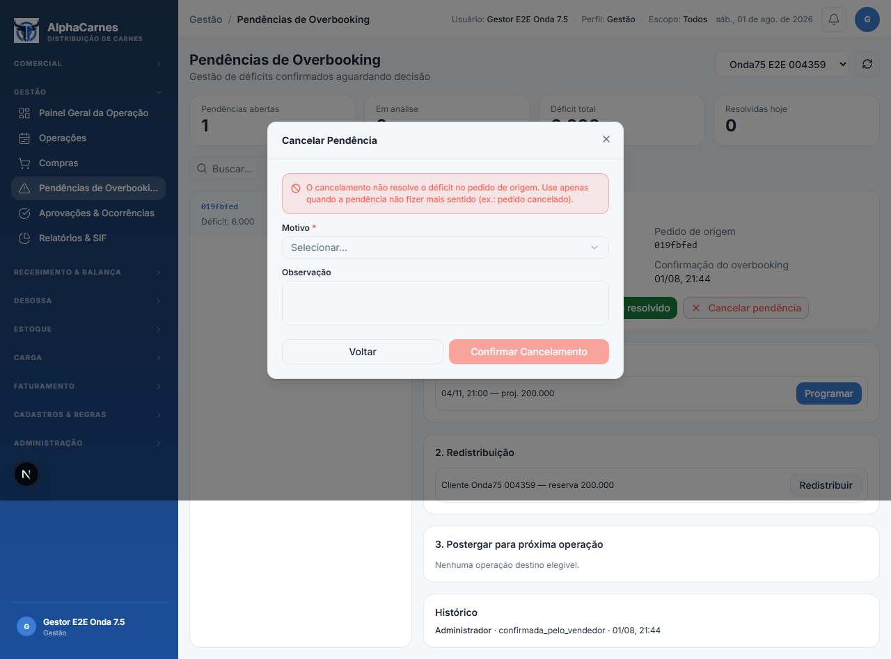
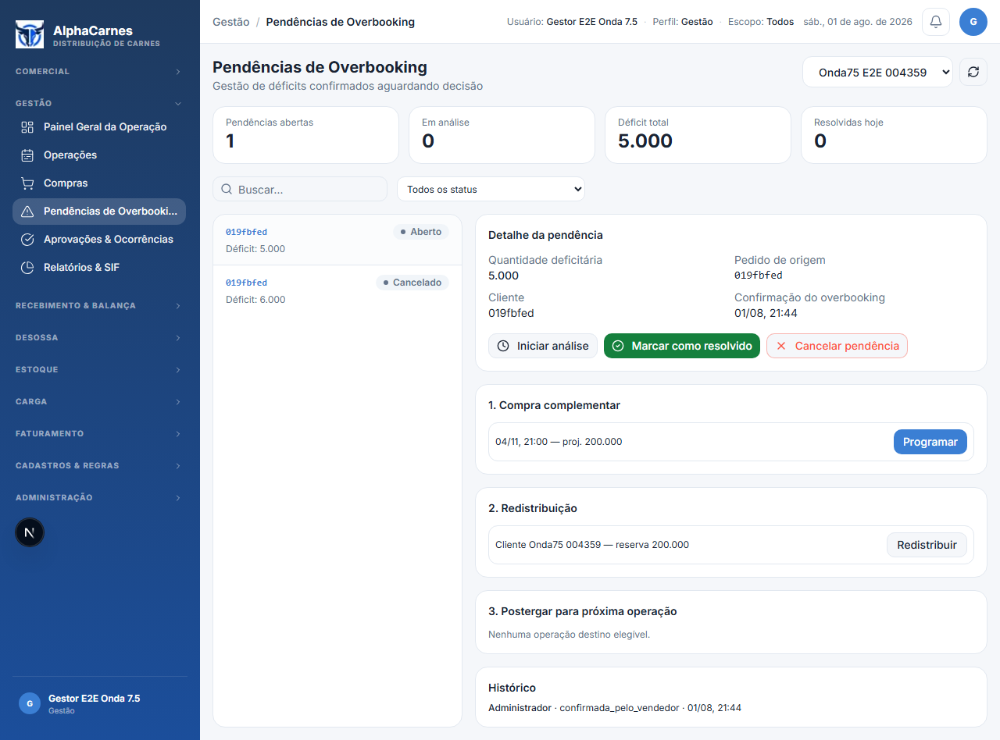
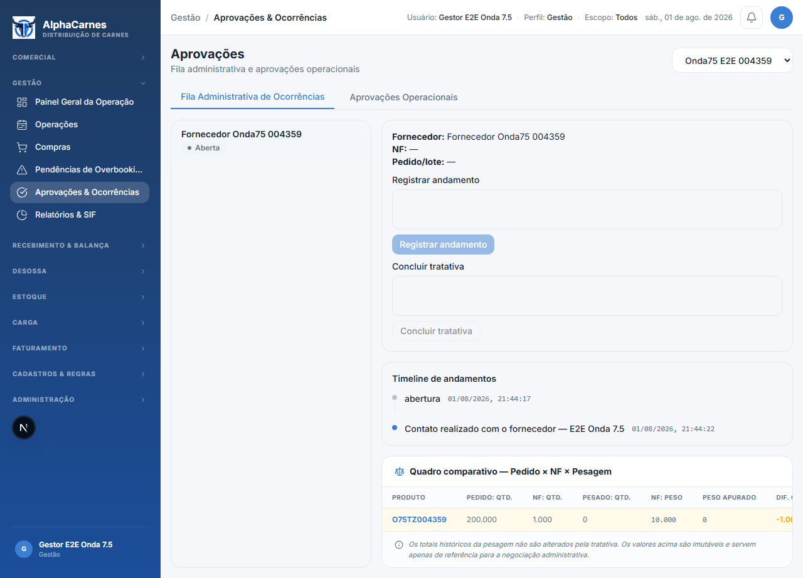
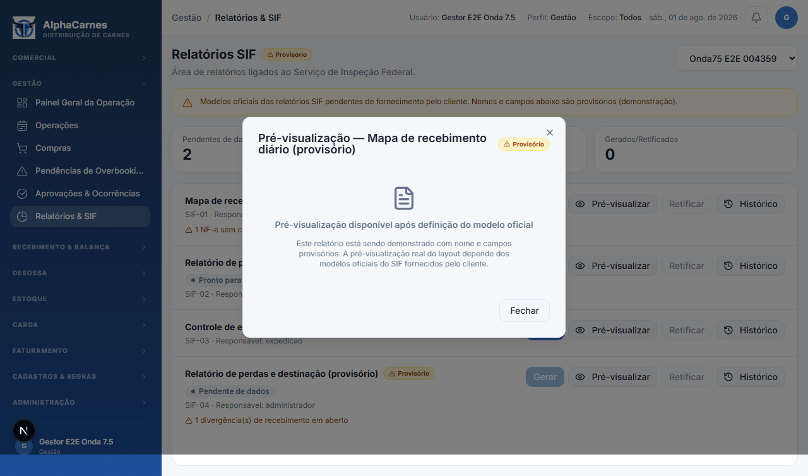

Rastreabilidade dos Dados
Run ID
20260802004359
Operação
019fbfed-8486-72f2-92f9-cfe5de15b21f
Data operacional
2026-11-05
Compra programada
019fbfed-8552-70c6-b700-fd2447b07753
Fornecedor
019fbfed-7cb9-7d05-a210-8800e3c006c6
Cliente
019fbfed-7e82-7080-938c-5bb4203d40e6
01
Overbooking — cancelamento exige motivo
http://localhost:3100/gestao/overbooking?operacaoId=019fbfed-8486-72f2-92f9-cfe5de15b21f

02
Overbooking — pendência cancelada
http://localhost:3100/gestao/overbooking?operacaoId=019fbfed-8486-72f2-92f9-cfe5de15b21f
03
Overbooking — bloco de postergação (sem operação destino elegível)
http://localhost:3100/gestao/overbooking?operacaoId=019fbfed-8486-72f2-92f9-cfe5de15b21f

04
Aprovações — timeline de andamentos
http://localhost:3100/gestao/aprovacoes?operacaoId=019fbfed-8486-72f2-92f9-cfe5de15b21f

05
SIF — modal de pré-visualização
http://localhost:3100/gestao/relatorios?operacaoId=019fbfed-8486-72f2-92f9-cfe5de15b21f
